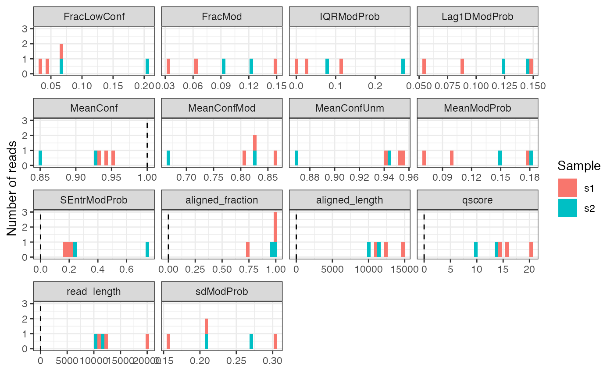

This function plots histograms of the various per-read summary statistics
calculated by addReadStats.
Usage
plotReadStats(
se,
readInfoCol = "readInfo",
qcCol = "QC",
minQscore = 0,
maxEntropy = Inf,
maxFracLowConf = 1,
minReadLength = 0,
minAlignedLength = 0,
minAlignedFraction = 0
)Arguments
- se
A
RangedSummarizedExperiment, typically generated byaddReadStats.- readInfoCol
A character scalar providing the name of the column in
colDatathat contains read info. Can beNULLif no such column exists.- qcCol
A character scalar providing the name of the column in
colDatathat contains quality metrics (calculated bycalcReadStats). Can beNULLif no such column exists.- minQscore, maxEntropy, maxFracLowConf, minReadLength, minAlignedLength, minAlignedFraction
Numeric scalars representing possible threshold values used in
filterReads, for illustration in the plot panels.
Examples
library(SummarizedExperiment)
modbamfiles <- system.file("extdata",
c("6mA_1_10reads.bam", "6mA_2_10reads.bam"),
package = "footprintR")
se <- readModBam(bamfile = modbamfiles, regions = "chr1:6940000-6955000",
modbase = "a", verbose = TRUE,
BPPARAM = BiocParallel::SerialParam())
#> ℹ extracting base modifications from modBAM files
#> ℹ opening input file /Users/runner/work/_temp/Library/footprintR/extdata/6mA_1_10reads.bam using 1 thread
#> ℹ reading alignments overlapping 1 region
#> ⠙ 1 done (103/s) | 10ms
#> ⠙ 1 done (59/s) | 17ms
#>
#> ℹ removed 1724 unaligned (e.g. soft-masked) of 25090 called bases
#> ℹ read 3 alignments
#> ℹ opening input file /Users/runner/work/_temp/Library/footprintR/extdata/6mA_2_10reads.bam using 1 thread
#> ℹ reading alignments overlapping 1 region
#> ℹ removed 320 unaligned (e.g. soft-masked) of 10174 called bases
#> ℹ read 2 alignments
#> ℹ finding unique genomic positions...
#> ✔ finding unique genomic positions... [19ms]
#>
#> ℹ collapsed 17739 positions to 7967 unique ones
#> ✔ collapsed 17739 positions to 7967 unique ones [47ms]
#>
se <- addReadStats(se, BPPARAM = BiocParallel::SerialParam())
plotReadStats(se)
